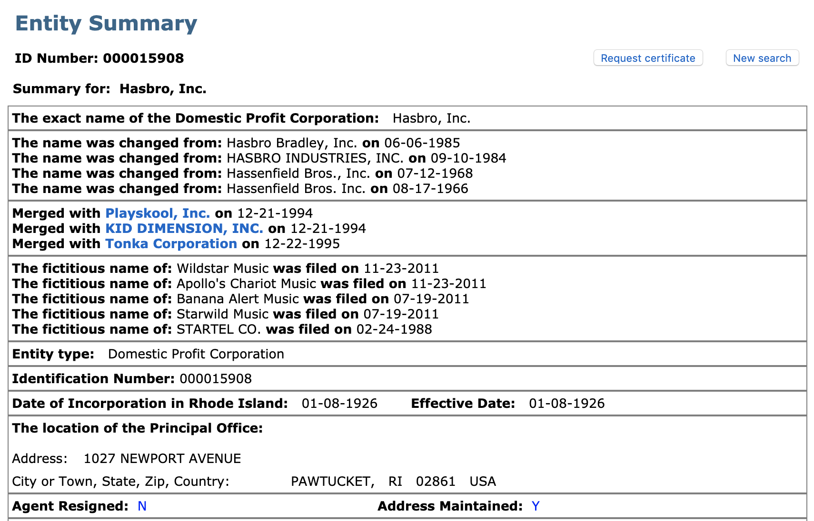
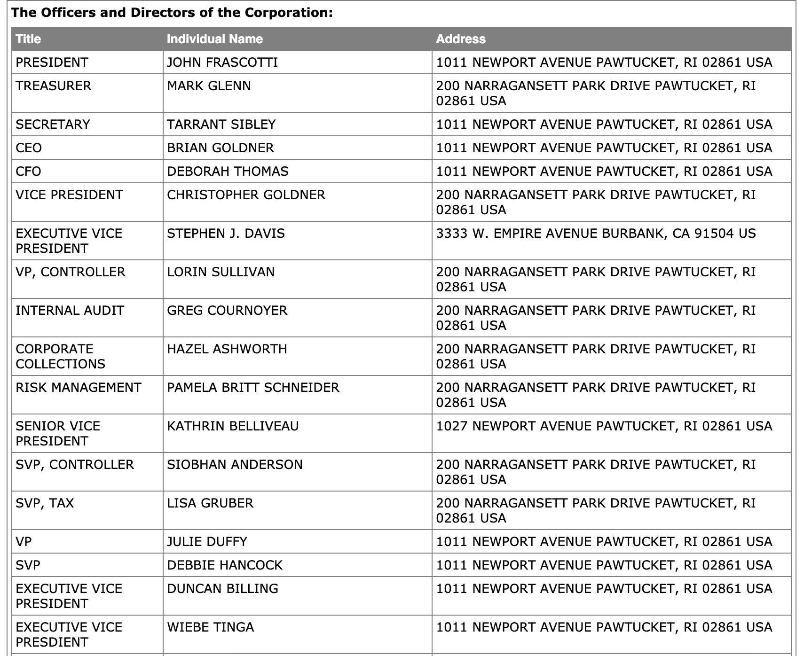

16. What we’re working on at Middesk
2019-07-13
I’ve been working at Middesk now for a bit over a month, so I thought I’d share a little about what we’re working on and why I’m excited about it. But first, a diversion.
Lately I’ve been totally engrossed in a book called The Visible Hand: The Managerial Revolution in American Business by Alfred D. Chandler, Jr. I can’t in good faith say that it’s a page turner, but it certainly packs a crazy number of insights on business history in every argument.
Chandler’s proposition is pretty straightforward. In studying the evolution of American enterprise from the early 1800s until the late 20th century, he argues that the rise of two factors reshaped American capitalism: the division of a firm’s work into distinct operating units, and the rise of a salaried managerial class. As firms’ work got more complex, so too did their business structures. The reasons and impacts for that are fascinating.
Alright, I know that’s heavy, and I’m not here to talk much about that (although if you’re interested, please hit me up!). But there’s an interesting story Chandler tells about legal structures that fits here, I promise:
Until well after 1840 the partnership remained the standard legal form of the commercial enterprise […]. The partnership, normally a family affair, consisted of two or three close associates. It was a contractual arrangement that was changed when a partner retired, died, or decided to go into another business or join another associate. A partnership was often set up for a single voyage or venture. And one man could be involved in several partnerships. The partnership was used by all types of business, from the small country storekeepers to the great merchant bankers who dominated the Anglo-American trade. (36)<
Business was simple back then. An owner-manager interacted with a few partners, suppliers, buyers, maybe financiers, and likely knew them well, even intimately. Things were settled personally; there was no need for complicated legal structures that introduced limited liability, or perpetual existence of an entity, or the ability to issue securities.
Yet that quickly changed. Things started moving faster. Firms started focusing and specializing. New industries sprung up: banking, insurance, shipping, freight forwarding. As firms served more towns and cities, business became less personal.
The specialization of enterprise in commerce, finance, and transportation is, then, the central theme of the institutional history of the American economy during [early 1800s]. Such specialization brought an end to the personal business world of the general merchant […]. Rarely did a merchant know both the producer and consumer at either end of the long chain of middlemen, transporters, and financiers who moved the goods through the economy. The concomitant of such specialization was thus a reliance on impersonal market coordination. (48)
Fast forward to today, and “impersonal market coordination” is the status quo. A startup in San Francisco might sell software to an SMB in Kansas City that in turn is financed by a bank based in Chicago; none of these firms or individuals personally know one another, but each believes the other will fulfill their transactional commitment. In 2019 it’s more likely than not that a business has no idea who they do work with, beyond their brand name.
What Middesk does
Middesk delivers background checks on businesses.
What does that mean? This introductory post provides a great overview on what we do, for who, and why, but in sum, Middesk delivers (1) verifications and checks based on (2) up-to-date, (3) bona fide data.
Bona fide data: We rely on legitimate data sources like each U.S. state’s Secretary of State filings, Federal tax filings, or content retrieved straight from a firm’s website. These unadulterated records give us a strong “ground truth” to learn about an entity.
Up-to-date: We don’t assume that any entity is static: we deliver a report of a business that is accurate to that day.
Verifications and checks: Ingesting up-to-date, bona fide data for every business in the United States uniquely enables us to perform basic identity verification checks along with advanced trust, risk, and fraud detection analyses.
What operations means
So, to what I’m working on. People ask me what “operations” means at a 4-person startup. You’re right in assuming it means a lot, but generally things fall in three categories:
1. Data operations
Above I stressed the importance of up-to-date, bona fide data. Well, there’s a lot of work in getting that data, and I’ve spent a healthy amount of time doing just that.
In Middesk’s nascent stages, data operations has involved partnering with all states in the Union to purchase, acquire, and ingest tens of millions of business entity records to feed our platform. That means not only building relationships with a huge array of stakeholders across state governments, but starting to build out an incredibly rich graph of the American economy with records that look like this:


2. Product operations
The Middesk product seriously reduces customer burden in extracting, understanding, analyzing, and triangulating such bona-fide information, and we’re constantly improving how our product intelligently serves that data to our customers.
Operations has a critical role in diving deep into our product to continuously drive improvement. From analyzing how effectively our entity resolution logic is performing, to constantly ensuring delivery of fast and high-quality reports, to testing hypotheses for improvement, operations works cross-functionally to make sure we (and our customers) are getting the most out of our data asset.
3. Business operations
A big part of the fun at a start-up is wearing many hats. Like, all of the hats. Sometimes they might even feel less like a hat and more like a beanie, or a bike helmet, or just a headband, but they’re all fun.
One day might be spent talking to account prospects, then hopping over to coffee with potential recruits, followed by project work, before spending the afternoon preparing a customer pilot, and finally working to scale our processes to hit next month’s projected volume estimates. It’s always different, and the changing of pace is what keeps it fresh.
What we’re working on
In summary, we’re constructing an improved platform for conducting fast, easy business entity verification, or background checks on businesses.
I suppose that’s what we’re building day-to-day. But in a broader sense, I feel we’re working on something more fundamental, more squared to Chandler’s story. We’re building the trust layer between businesses at a time in history when it’s really hard to trust an unknown quantity.
(We’re also hiring; if any of this is at all interesting to you, give a shout at will@middesk.com. I’d love to chat.)